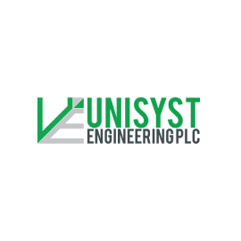
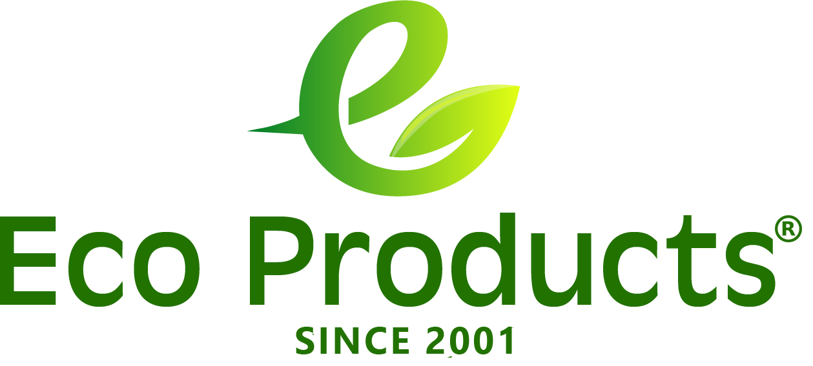

Greenkeepers (Pvt) Ltd is a “BOI company” (registered with the “Board of Investment”, facilitating investors and exporters), and was incorporated in Sri Lanka in the year 2008 to offer sustainable waste management services for the Sri Lankan apparel industry. In the absence of a textile waste recycling mill in the country, the company signed long term contracts with compliant recycling mills overseas and continued as an exporter generating foreign exchange to the country. To date the company has recycled over 25 million kilograms (cumulatively) of textile waste generated by Sri Lanka’s apparel industry
Established in 1979, Unisyst Engineering PLC (formerly known as Alufab PLC) is a leading manufacturer and supplier of high quality architectural aluminium joinery systems, glazing and facade products in Sri Lanka.
WHO WE AREEco Products® is a privately owned Sri Lankan manufacture; (Member of the National Crafts Council), specialized in making environment friendly promotional items. Most products are hand-made according to customers' requirements, with customer specified logos and captions.One of the most popular product of ours is the recreated version of the Monk Bag. This can be produced in various colours and prints. Monk Bag is a popular Conference Bag and used by many UN agencies & government institutes. It’s believed to be that this bag was designed during the period of Lord Buddha, some 2500 years ago.